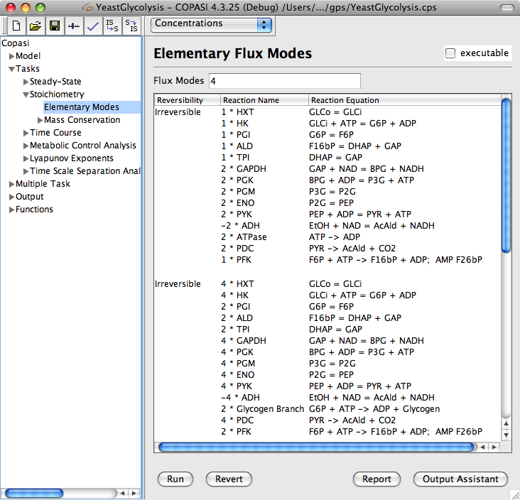

Letting COPASI calculate the elementary flux modes for the system is very easy. Select the Tasks->Stoichiometry->Elementary Modes in the object tree and click on the Run button in the dialog that appears.
The elementary modes found will be displayed directly in this dialog. Each elementary mode lists the reactions it consists of together with their chemical equations.
If you want to have output from the Elementary Mode calculation, you have to create an output definition as described in the
manual definition section. The easiest way is probably to use the output assistant which activated via the Output Assistant button. This is described in the
output assistant section. All that is left to do in order to write the output to a specific file is to connect an output definition with a file. This can be achieved by clicking on the Report button. This opens a dialog that lets you connect the report of a specific task to a file on your hard disk. First we choose a report that is suitable for the Elementary Flux Modes analysis task from the drop down list at the top of the dialog. Next, we specify a file that will be used to store the report by clicking on the browse button and selection the destination in the file dialog that opens. Per default, COPASI creates a new file, if the file does not exist, or overwrites an existing file with the same name. Alternatively, you can tell COPASI to append the report to the end of an existing file by selecting the corresponding check box labeled Append at the bottom of the dialog. Once you are finished, you click on the Confirm button. If you now run the task, COPASI will write the output to the file you specified.
|  |
| Elementary Flux Modes Analysis Dialog with Results |